AVATAR REVIEW · 174
Wardrobe & arms
A pleated mini skirt with a patterned hem, cleaner fitted pants and collars built into the neckline. Switch between the current hands and experimental floating arms.
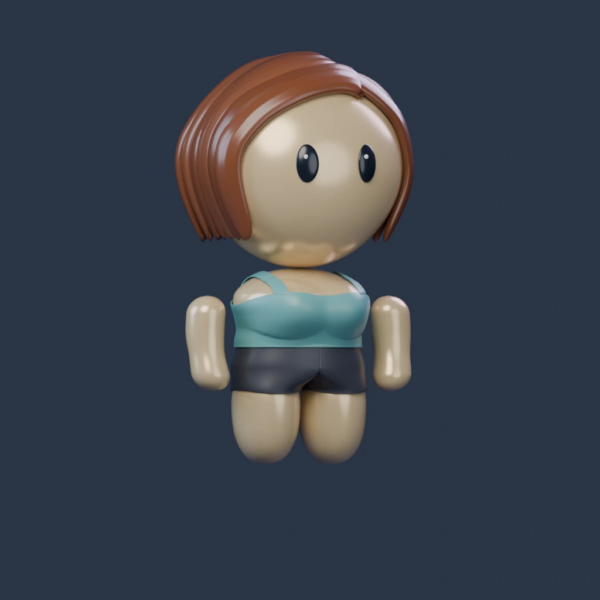
Blender reference · Tank / Black / Light warmLoad 3D to mix outfits, rotate and zoom. Each build remembers its selections.
Floating arms are an experiment. Their position follows sleeved and sleeveless tops. Rendered wardrobe comparisons use round hands; live 3D shows the selected arms, colors, top and bottom.
Skirt
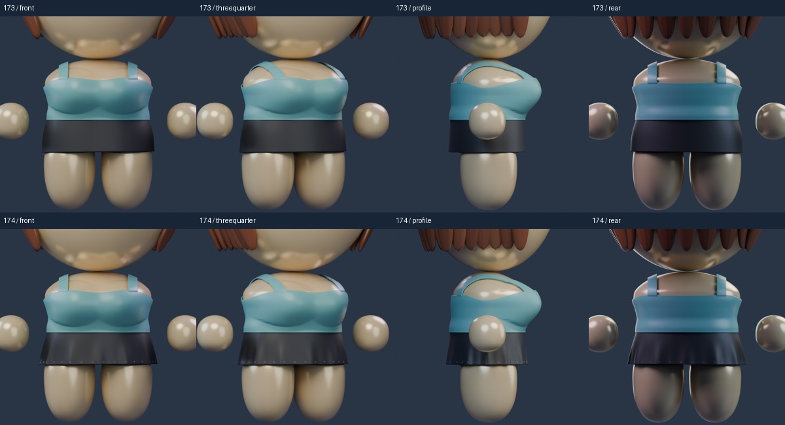
Pants
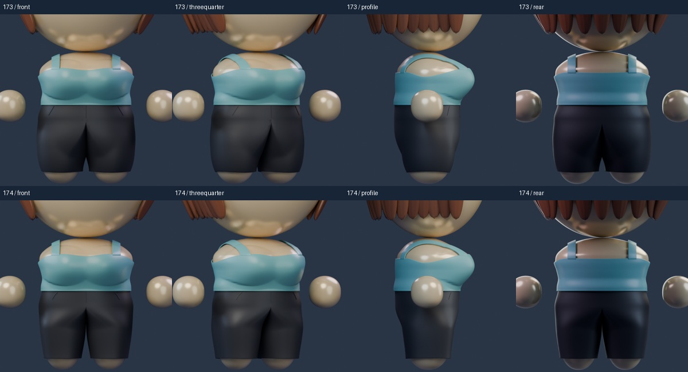
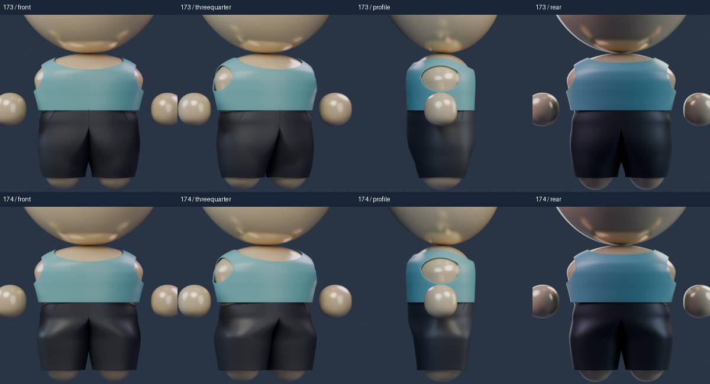
Integrated collars
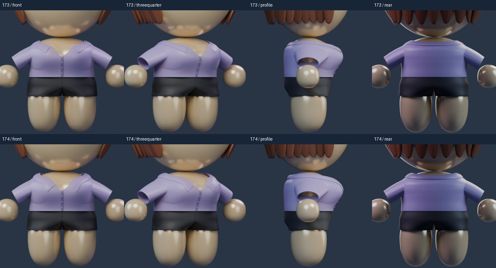
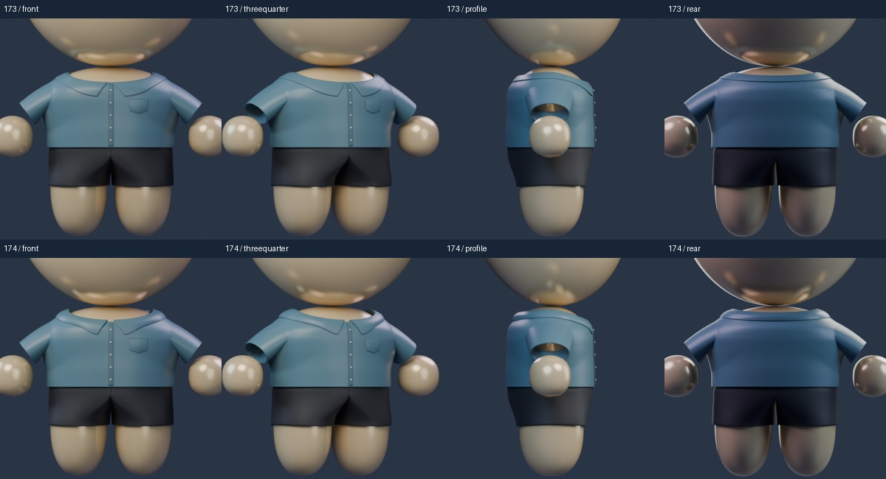
Arms comparison
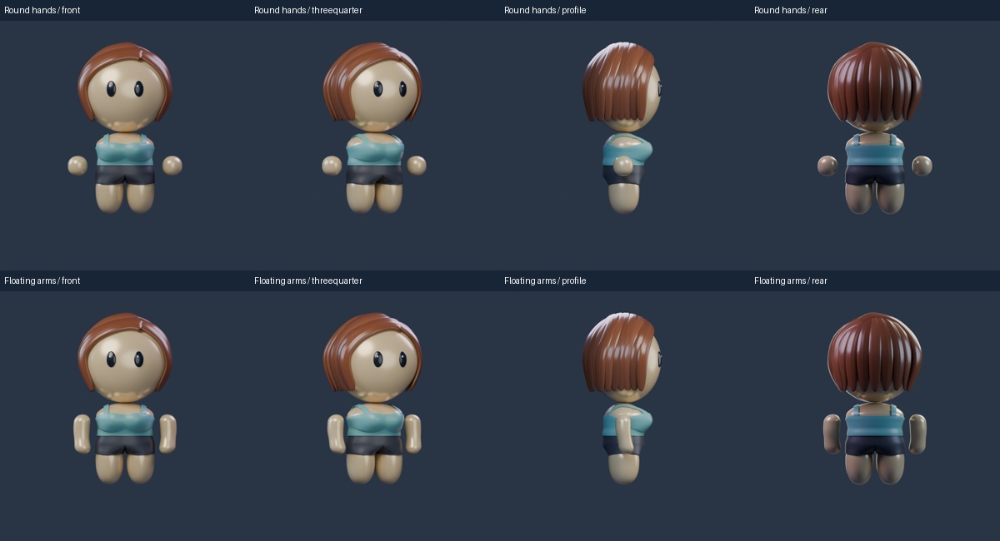
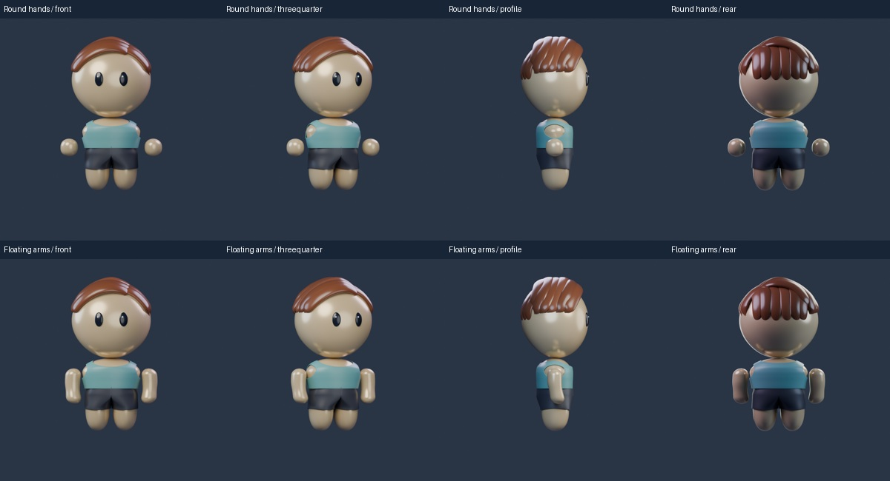
Outfit fit review
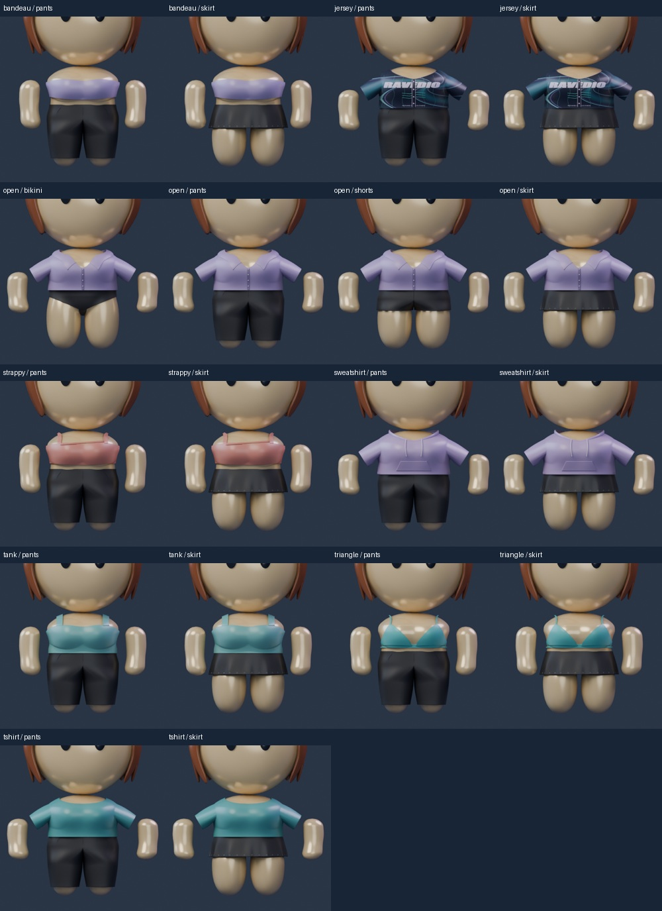
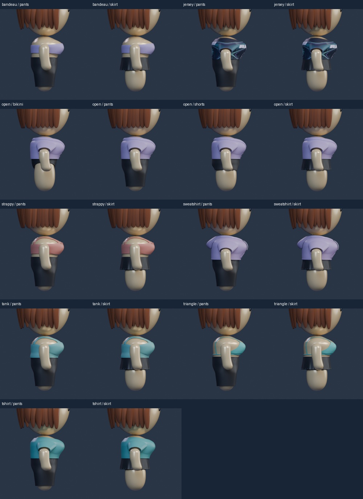
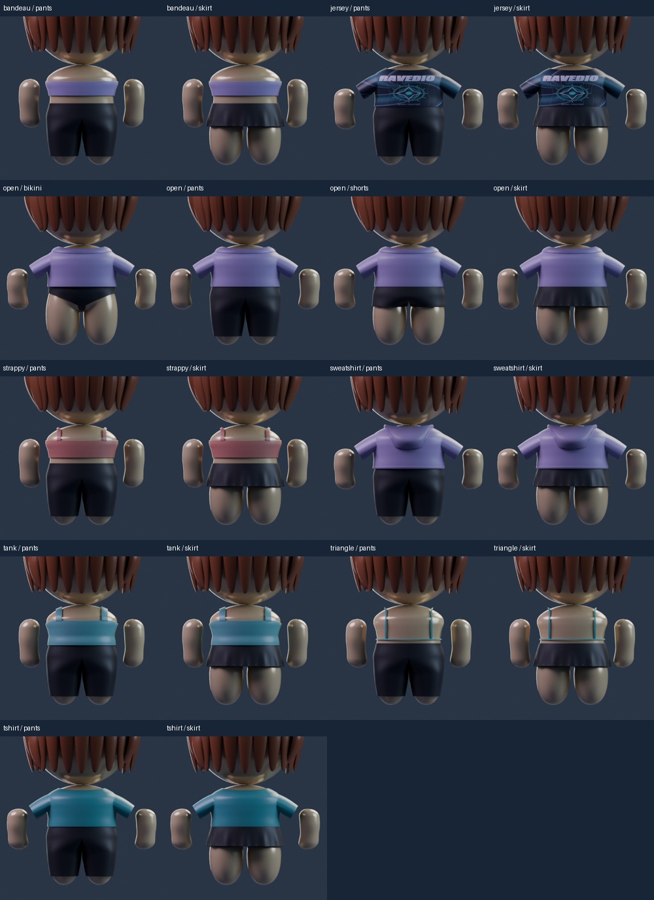
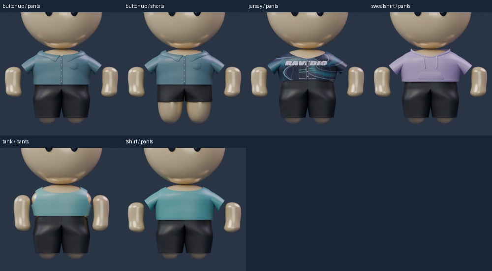
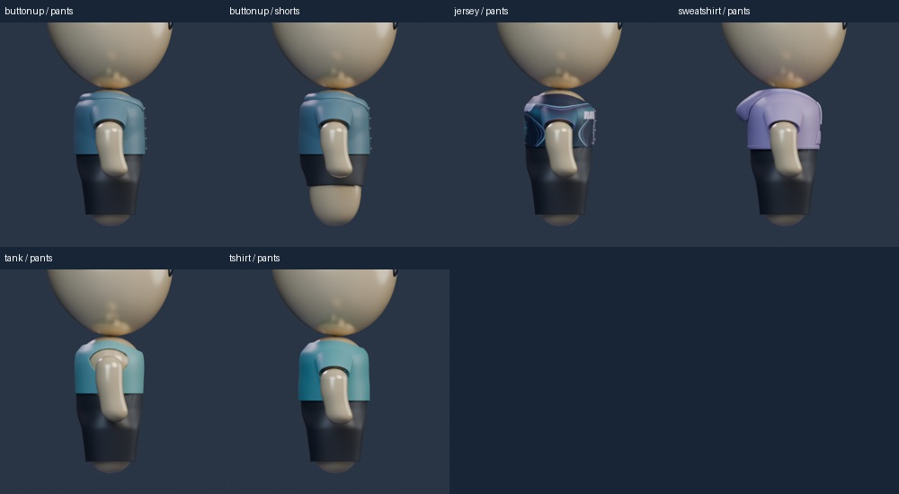
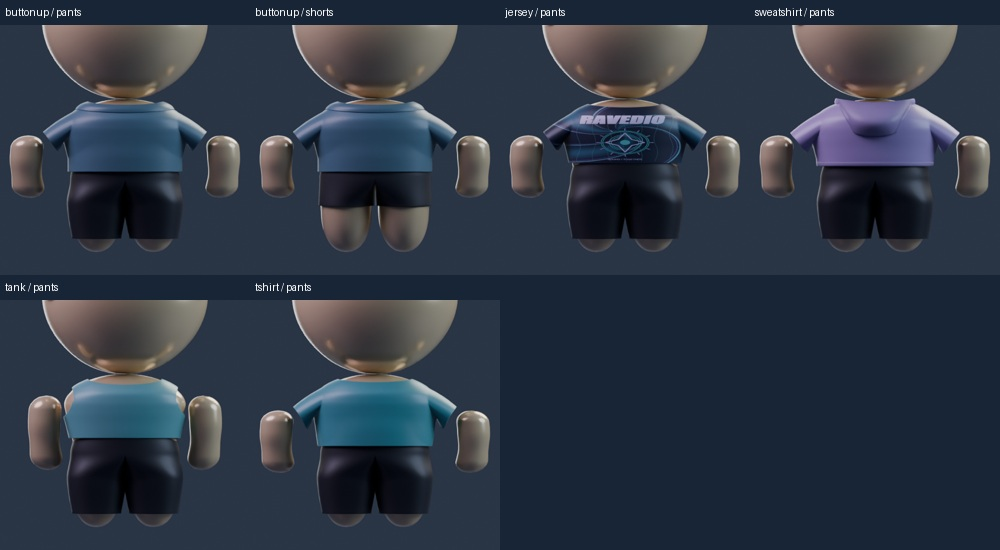
Files and review scope
Saved native cartoon candidates. Owner review is pending. The existing eye choices and palettes are retained.
Construction references: Collar stand and neckline; pleated skirt and hem.